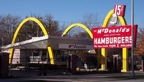

Irmãos McDonalds
Os irmaos Dick e Mac McDonald sentiam que não havia muitas oportnidades na Nova Inglaterra , e se mudaram para a Califórnia em busca de novas oportunidades. Após o fracasso no ramo cinematográfico, mais tarde eles tiveram sucesso em restaurantes drive-in . Em 1948, eles se arriscaram ao o timizar suas operações e introduziram um sistema chamado "Sistema de Serviço Speedee",vendendo hámburguers de 15 centavos. Logo o restaurante tornou-se um sucesso, e os dois começaram a franquear o seu conceito - nove foram transformados em restaurantes operacionais. Em San Bernadino, Dick e Mac aperfeiçoaram o Sistema Speedee com um cardápio limitado , incluindo hambúgueres , batatas fritas e milk-shakes. Os irmãos venderam 14 das franquias, e 10 se tornaram restaurantes operacionais, além da unidade em San Bernardino.
Ray Kroc
Nascido em Chicago, Ray Kroc deixou o ensino médio depois do segundo ano para fazer parte da equipe do Corpo de Ambulâncias da Cruz Vermelha durante a Primeira Guerra Mundial. A guerra terminou antes da unidade ser enviada para o exterior, e então Ray acabou retornando para casa e ganhar a vida como músico, e acabou vendendo copos de papel. Em 1939, ele se tornou distribuidor da Multimixer(uma máquina de milkshakes). E já em 54, conheceu os irmãos McDonalds, e se tornou um agente da franquia. Em 1955, Kroc abriou o primeiro McDonald's ao leste do rio Missisipi.
Globalização do McDonald's
O McDonald's começou a crecer e se expandir cada vez mais internacionalmente a partir de 1967,abrindo lojas no Porto Rico e no Canadá. E hoje já são mais de 36.000 restaurantes em mais de 100 países.
O Marketing Vermelho e Branco
Os dois irmãos insistiram ao arquiteto que projetasse um edifício chamativo que destacasse seu Sistema de Serviço Speedee. O arquiteto Stanley Meson, projetou o que nomeou como "Vermelho e Branco". Dick McDonald, se incomodava om o fato da linha do telhado ser um pouco plana demais, e adicionou arcos ao edifício. Este projeto foi usado até 1953, quando foi substituído pelo Telhado Mansarda em 1960.
Telhado de mansarda
O McDonald's colocou seu novo design de telhado Mansard em 1969, em Matteson, Illinois. No começo, muitos franqueados tiveram que modificar seus prédios branco e vermelhos para o novo design.
Hoje
Hoje , a rede de restaurantes continua a evoluir cada vez o seu design, e a atender melhor as expectativas dos clientes.